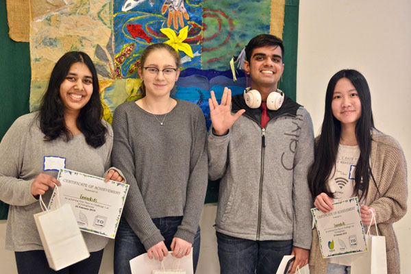
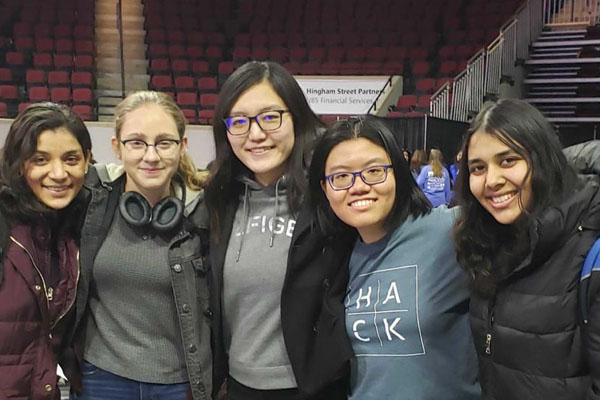
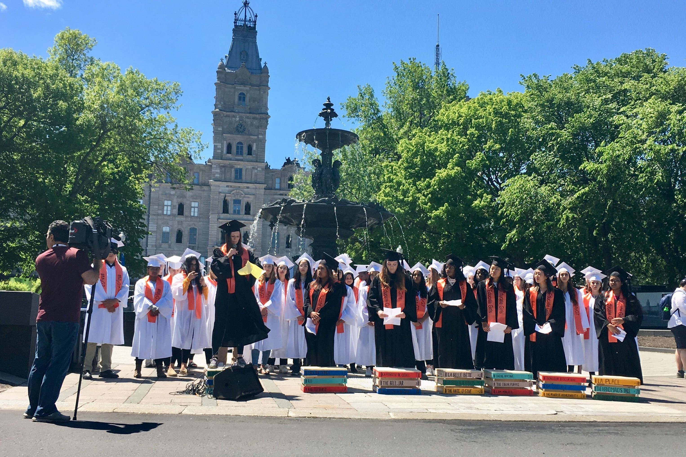
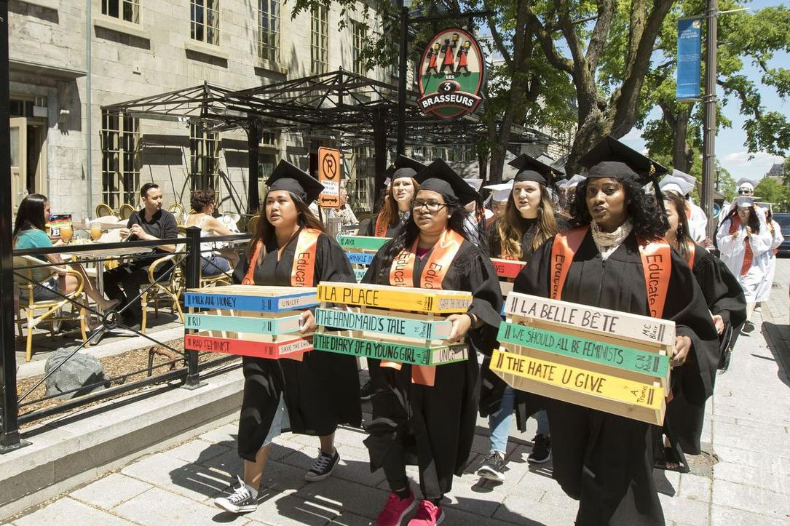

Hi! My name is Jaya. I'm a nanotechnology engineering student at the University of Waterloo. I'm interested in software development and enjoy learning to code. Below is some more info about me.
Hi! My name is Jaya. I'm a nanotechnology engineering student at the University of Waterloo. I'm interested in software development and enjoy learning to code. Below is some more info about me.
I'm studying nanotechnology engineering, which involves the manipulation of matter at the atomistic level to create innovations in various fields, including pharmaceuticals, electronics, and new materials, among others. I chose this field because it's multidisciplinary; it combines multiple areas I'm interested in, including electrical engineering, chemical engineering, materials science, and biology. You can read more about the program here
I'm very interested in learning how to code because I like building things and problem solving. Currently, I can code in Python, HTML/CSS/JavaScript, and MATLAB. I have learnt these languages both through school and on my own through hackathons and online resources. I'm currently working on further developing my skills in web development and machine learning/AI. I would also love to learn back-end programming in the future. Check out my impossible list.
I like learning about UX/UI design and HCI (human-computer interactions). I'm proficient in design tools like Figma, Adobe XD, and UXPin.
I enjoy attending hackathons because it gives me the opportunity to try solving real problems with tech. I get to develop my skills while meeting other students. My first hackathon was ECOding Hacks hosted by TOHacks at York University, where my team (pictured below) created a web-app called EnviroKids to educate kids about the environment. EnviroKids won the top prize in its category.
Next, I attended WiC Hacks 2019 at the Rochester Institute of Technology. My team created MeeLia, a mental health voice assistant. MeeLia won the MLH Best Hardware Award. Most recently, I attended TechTogether 2019 in Boston. There, my team (pictured below) competed in the IBM challenge with an AI program called SmartHire whose goal was to help eliminate AI bias in the hiring process. Our project won the IBM Research Award and the Liberty Mutual Best Hack for Gender Equality Award.
I help organize the University of Waterloo BioTEC Conference, an annual student-run biotechnology and bioengineering conference that strives to promote some of the most cutting edge developments at the intersection of biology and engineering. You can find more info about BioTEC here.
I'm an avid swimmer and was on my high school's competitive swim team. I've also done lifeguard training through the National Lifesaving Society.
I enjoy traveling to new places. Most recently, I visited New York City, but I've also been to Quebec City, Ottawa, Orlando, Boston, Washington, DC, and India. There are lots of other places I'd like to visit - check out my impossible list for more.
My favourite trip so far has been to Quebec City where I had the opportunity to join the World Vision delegation of 75 students from across Canada to the G7 Summit in June 2018 and participate in a demonstration (pictured below) to advocate for girls' education. Us 75 students represented the 75 million children out-of-school around the world due to crisis. Our demonstration was a success, as the G7 countries later announced they would pledge $3.8 billion for girls' education, $400 million of which were pledged by Canada. Read more about the story here.
 